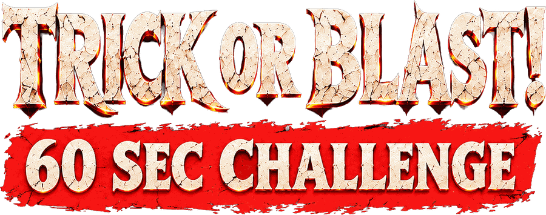

Sixty seconds, one cannon. Blast everything that appears and grab the gold coins — but never shoot the Sushi Angel.
Your name goes on the leaderboard.
Start Game drops you into a 360° Halloween scene — no camera permission needed, and it behaves the same on every phone. Camera AR puts the enemies in your own room, but iPhone browsers report which way you are facing and not where you walk, so the scene travels with you.
TIME UP
0
0 defeated · 0/10 coins · 0% accuracy
NEW BEST
BEST SCORES
Loading model…
Please wait
Point the phone toward the floor. The monster will appear automatically.
AR READY · WAITING
TIME1:00
KILLS0
COINS0
SPARED0
SCORE0

ENEMY 1
Finding play area…
100%
➤
Tap START AR. On iPhone this runs in camera fallback mode; on WebXR devices it can lock to a detected floor.
Front-end Test SettingsApply restarts round
Sushi Angel — never shoot it. It flies past behind the enemy; direct hits only, no aim assist ever pulls a shot onto it.
Spawn any enemy now — no need to clear the earlier rounds